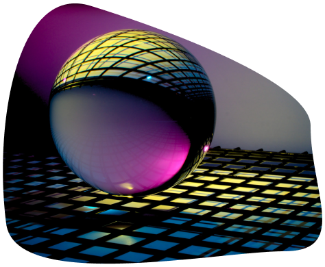
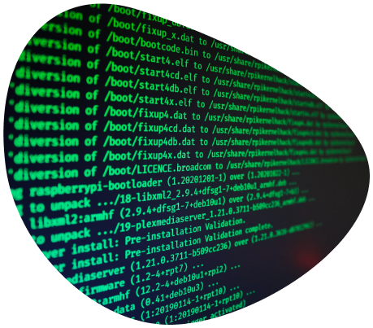

Чим цікава професія Інженерія програмного забезпечення?
Чому саме її треба вибирати?
1
Розвиток цифрової економіки та спрямованість на інновації
З кожним днем все більше компаній переходять на цифрові технології та інновації, що призводить до збільшення попиту на інженерів програмного забезпечення.

2
Високі зарплати та можливість кар'єрного росту
Зарплати інженерів програмного забезпечення середнього рівня високі та можуть значно збільшуватися з рістом досвіду та навиків.

3
Можливість впливати на суспільство та впроваджувати нові технології
Інженери програмного забезпечення мають можливість розробляти та впроваджувати технології, які значно впливають на життя людей та суспільства.

4
Широкі можливості для креативності та технічного вдосконалення
Робота інженера програмного забезпечення дає відчуття вдосконалення та креативності, основна з необмеженими можливостями для технічного розвитку та вдосконалення.
5
Широкий вибір спеціальностей
Інженери програмного забезпечення можуть спеціалізуватися в різних галузях, таких як веб-розробка, мобільні додатки, машинне навчання та ін.
6
Можливість віддаленої роботи
Багато компаній пропонують віддалену роботу для інженерів програмного забезпечення, що дає можливість гарантованої відповідності працевлаштування до особистих потреб та побажань.
